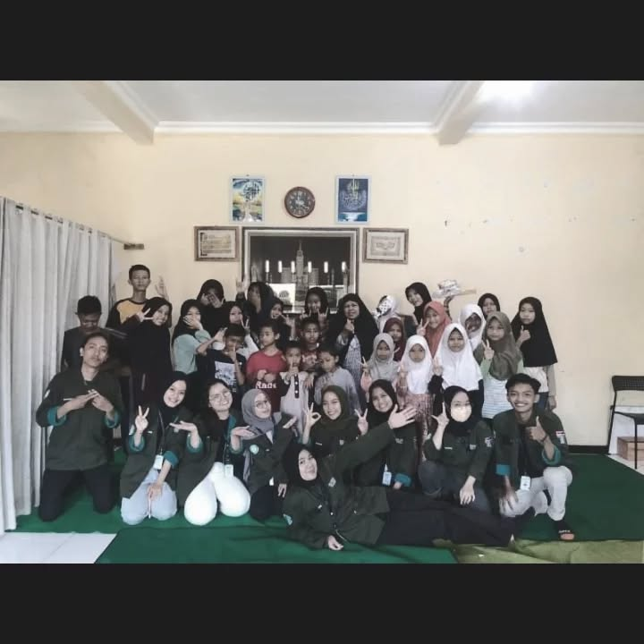

Kegiatan Anak-Anak



Rumah kasih dan harapan bagi anak-anak yang membutuhkan. Kami berkomitmen membimbing mereka menjadi generasi yang mandiri dan berakhlak.
Pelajari Lebih LanjutYayasan Budi Rahayu berdiri untuk membantu anak-anak yang membutuhkan tempat tinggal, pendidikan, dan kasih sayang. Kami percaya bahwa setiap anak berhak mendapatkan masa depan yang cerah.
Baca Selengkapnya